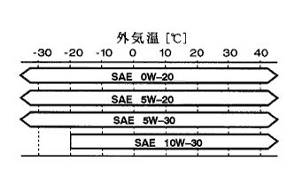

各部油脂·冷却液 指定油脂と容量 |
|  |
| エンジン型式 | オイルのみ交換充填量［Ｌ］ | オイルとオイルフィルター交換時充填量［Ｌ］ |
|---|---|---|
| 1NZ-FE | 3.4 | 3.7 |
| 2NZ-FE | 3.4 | 3.7 |
ガソリンエンジンオイル（指定油脂）
| 品 名 | 品質グレード | 粘度グレード |
|---|---|---|
| トヨタ純正モーターオイル | API SM、EC/ILSAC GF-4 | SAE 0W-20 |
| トヨタ純正モーターオイル | API SM、EC/ILSAC GF-4 | SAE 5W-30 |
| トヨタ純正モーターオイル | API SM、EC/ILSAC GF-4 | SAE 10W-30 |
| トヨタ純正モーターオイル | API SL、EC | SAE 5W-20 |
| トヨタ純正モーターオイル | API SL、EC | SAE 10W-30 |
| 項 目[型式] | 容 量［Ｌ］（参考値） | 指 定 油 脂 |
|---|---|---|
| 冷却液[2NZ-FE] | 4.4 | トヨタ純正 スーパーロングライフク－ラント |
| 冷却液[1NZ-FE] | 4.3 | ↑ |
| オートマチックトランスアクスルフルード[U441E] | 5.6 （含むディファレンシャル） | トヨタ純正 オ－トフル－ドタイプT-IV |
| オートマチックトランスアクスルフルード[U340E] | 6.8 （含むディファレンシャル） | ↑ |
| オートマチックトランスアクスルフルード[U340F] | 6.9 （含むディファレンシャル） | ↑ |
| トランスファ－オイル[MF1A] | 0.9 | トヨタ純正 ギヤオイルス－パ－ （API GL-5，SAE 75W-90） |
| リヤディファレンシャルオイル | 1.7 | トヨタ純正 ハイポイドギヤオイルSX （API GL-5，SAE 85W-90） |
| パワ－ステアリングフル－ド | 0.7 | トヨタ純正 パワ－ステアリングフル－ド |
| ブレ－キフル－ド | － | トヨタ純正 ブレ－キフル－ド2500H |
| A/Cコンプレッサ－オイル | － | ND-OIL8 |